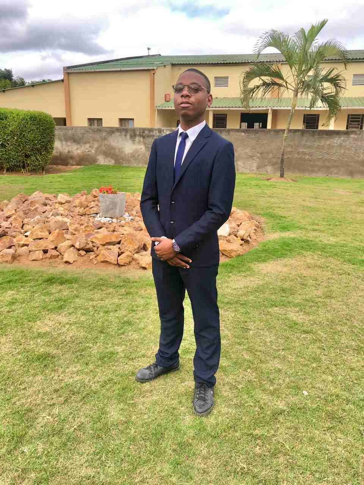

Home
About Me
My name is Liedson Nhapulo. I am 19 years old, Mozambican, and I live in Maputo, Mozambique. I graduated in Industrial Electricity from the Matola Industrial and Commercial Institute. I am currently studying through BYU–Pathway Worldwide, where I am developing my academic, professional, and personal skills. I am passionate about technology, continuous learning, and personal growth. I believe education is a powerful tool for creating opportunities and making a positive difference. My goal is to build a career in technology while using my knowledge and skills to serve others, contribute to my community, and continue growing both personally and professionally.
Student's Photo
